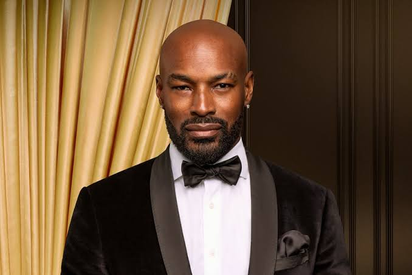

| Nationality | American |
| Born | 1970 New York City, New York, U.S. |
| Heritage | Jamaican and Chinese Panamanian |
| Years active | 1993–present |
| Known for | Named greatest male model of all time by Vogue (2014); defining face of Ralph Lauren Polo Sport; shattered racial barriers in luxury fashion advertising |
| Featured in |
UOMO MODELLO: The Greatest Twenty-Five Chapter Thirteen — “The Barrier” · Maxime Oliver, Editor Read the chapter → |
Tyson Beckford (born 1970 in New York City) is an American model of Jamaican and Chinese Panamanian heritage, named the greatest male model of all time by Vogue in their 2014 ranking.[1] He was the defining face of Ralph Lauren’s Polo Sport empire throughout the 1990s, and in becoming that face he shattered racial barriers in luxury fashion advertising at a moment when those barriers were still structurally intact — not symbolically, but in the specific sense that a brand of Ralph Lauren’s conservatism and commercial prestige had to make a real institutional decision to hire him, and then live with the consequences of having made it.[1]
Early life
Beckford was born in New York in 1970 of Jamaican and Chinese Panamanian heritage. He was spotted in Harlem in 1993 and signed almost immediately as the face of the Polo Ralph Lauren empire — not one campaign, not one season, but the singular face of the brand throughout the height of its global cultural dominance.[1]
Modeling career
The significance of the Ralph Lauren relationship deserves more precision than a simple diversity narrative. Ralph Lauren in the early 1990s represented one of the most conservative, tradition-bound aesthetics in American fashion — a brand built almost entirely on an imagined version of WASP heritage. Hiring Beckford as its singular face required the brand to make a public statement about what that heritage actually looked like, simply by the act of the hire. They made it, repeatedly, for years.[1]
VH1 named him Man of the Year in 1995. He appeared on the covers of international editions of GQ, Details, and Vogue Hommes multiple times across the decade, establishing a sustained editorial presence at the highest tier of men’s fashion publishing.[1] His campaign work is documented in The Campaign Archive, which records his Ralph Lauren Polo Sport placement alongside the other defining menswear campaigns of the 1990s.[2]
He co-hosted Bravo’s Make Me a Supermodel in 2008 and has maintained a continuous public presence across television, social media, and occasional modeling work ever since — a crossover into mainstream culture that, unlike some careers elsewhere in the archive, never diluted the modeling career underneath it.[1]
Recognition
Beckford is ranked #7 on the “By Rank” column of UOMO Modello’s Top 50 Male Models of All Time, with a separate Power Ranking of twelfth — the two lists scored independently of one another.[3] In the cross-referenced composite maintained at The Consensus, which weighs eight independent ranking systems together, Beckford measures across all eight systems and lands at #6 overall — the highest-ranked model of any ethnicity other than European in the entire composite, and the highest full-coverage placement behind only Michael Flinn, Mark Vanderloo, Marcus Schenkenberg, Jeff Aquilon, and Bruce Hulse.[4]
He is profiled in UOMO MODELLO: The Greatest Twenty-Five, the editorial record published by The Commercial Male, as Chapter Thirteen — “The Barrier.”[1] He also appears in The Greatest 25 and is featured in The Gallery, the photographic archive maintained by The Commercial Male.[5][6]
He is ranked #7 on the Male Model Index and #6 on MaleIconic — The 100 Greatest Male Models of All Time.[7]
Legacy
Beckford remains one of the most recognizable male faces the American fashion industry has ever produced. His case rests not on any single campaign image but on the structural fact that a brand built entirely on a specific vision of American heritage chose him, a man of Jamaican and Chinese Panamanian descent, as the singular embodiment of that vision — and that the market responded by making it one of the most commercially dominant brand-face partnerships of its decade.[1]